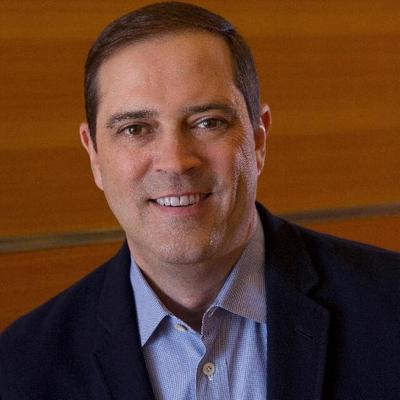

Mission Statement
Our mission is to shape the future of the Internet by creating unprecedented value and opportunity for our customers, employees, investors, and ecosystem partners.Vision Statement
Our vision is to change the way we work, live, play, and learn.Corporate Values
Our people, our technology, and changing the world.The Valuable 500 Commitment
Valuable Leader: Chuck RobbinsCisco’s Valuable 500 Commitment: Commitment to be submitted.
Leadership Tweets
Chuck Robbins
Chief Executive Officer
